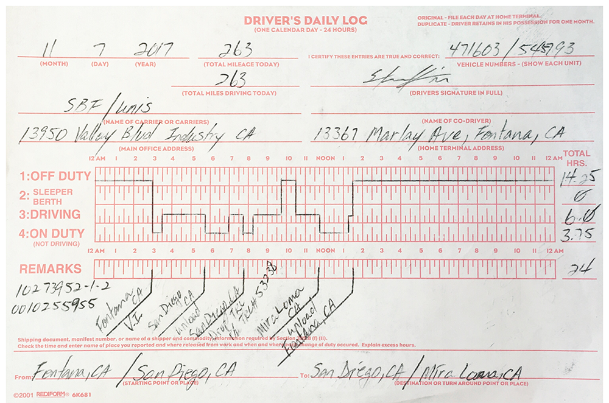
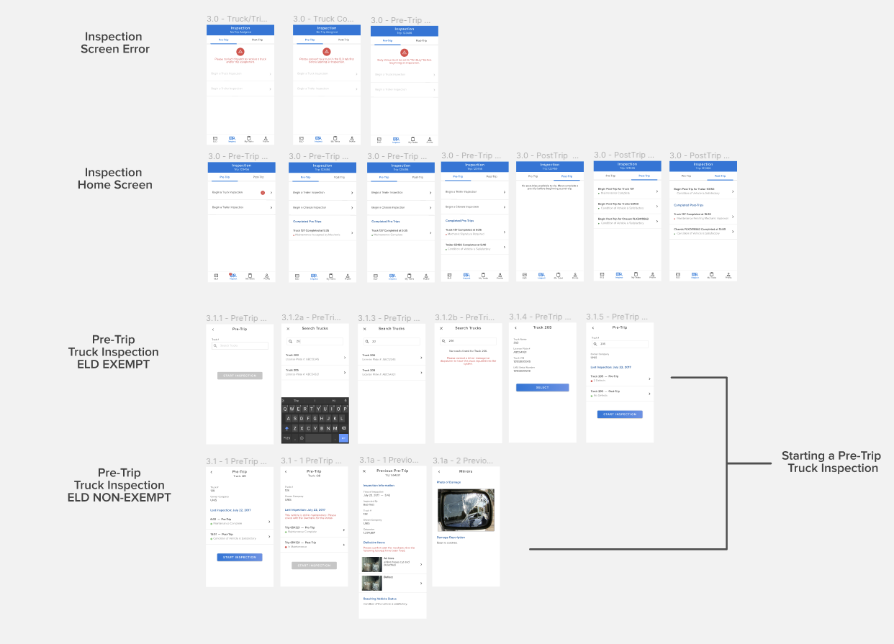

UNIS Drive
Android App
Project Details
Type: Design System
Company: UNIS
Platform: Mobile
Started: Feb 2019
Tools: Figma, Jira, Trello
Type: Design System
Company: UNIS
Platform: Mobile
Started: Feb 2019
Tools: Figma, Jira, Trello
This was an existing app launched in mid-2018 used by the transportation sector of UNIS so truck drivers can log and verify their hours and vehicle status to comply with government mandated laws by the Federal Motor Carrier Safety Administration (FMCSA).
Certain drivers have long-distance commutes and must follow a strict schedule and by law, starting December 2017, all logs must be electronically reported through an Electronic Logging Device (ELD).
The goal of this app is to electronically document this information to replace traditional paper logs.
View on Google Play.
The intensive research was completed early on in its first launch, but documentation and revisits were necessary to understand why certain features needed to be kept or refined.

Example of a typical driver's log. No PII is on this sample.
How can truck drivers switch to digitally logging their work activity?
Pain points and violated usability heuristics were marked from user testing on drawn wireframes organized by an existing information architecture. This kept a top-level understanding on how certain functions connected or differed.

Early ideation for designs

Workflows were divided per phases of the driver's journey.
Low fidelity wireframes were converted to high fidelity and then connected into screenflow diagrams to show the rest of the team, stakeholders, and developers. In addition, an interactive prototype would be created for internal (within our team) and external (company drivers) user testing to rectify functions.
View application in action.
Let’s connect —